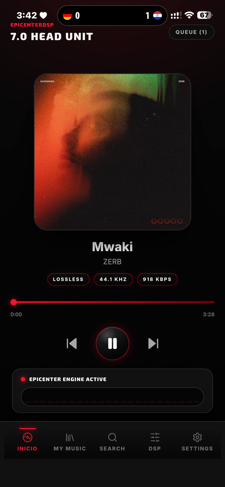
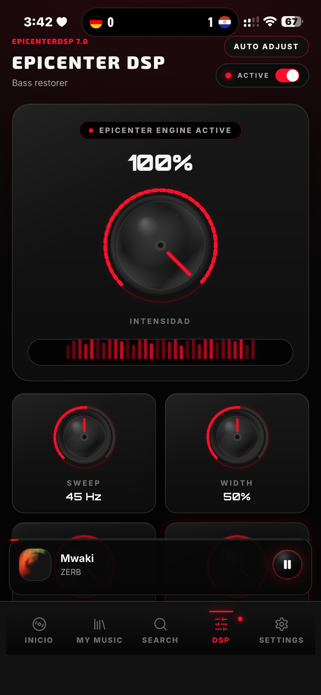
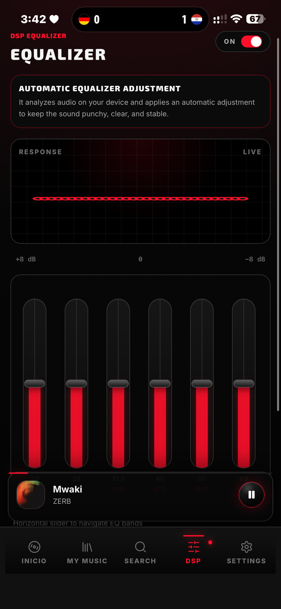
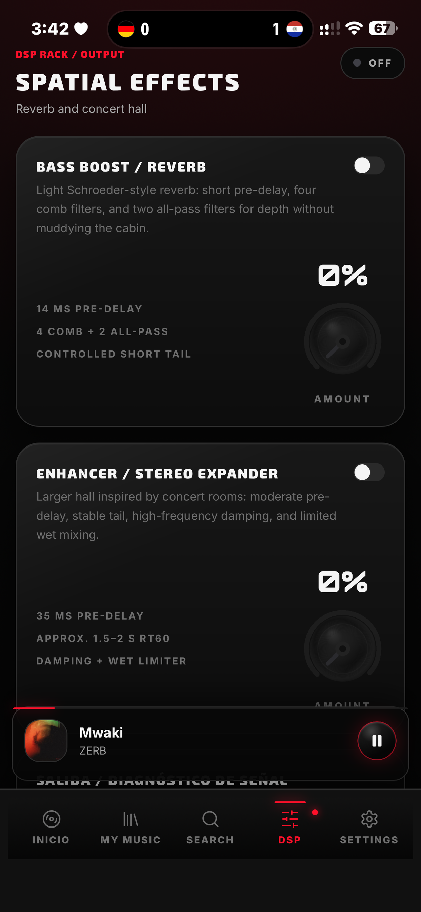
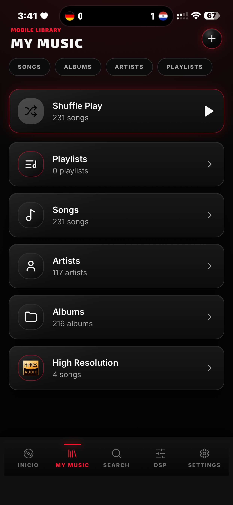
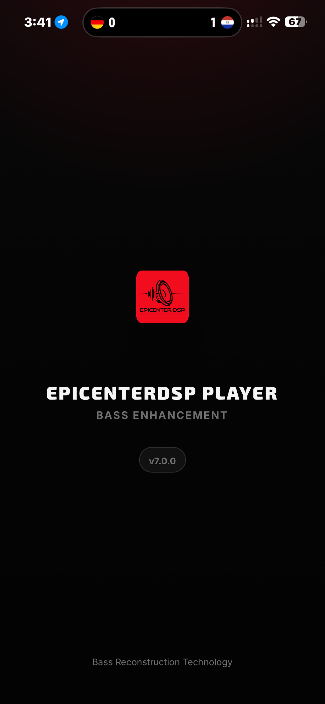

Restaura el bajo.
No solo lo subas.
EpicenterDSP Player es un reproductor con un motor DSP en tiempo real que reconstruye las frecuencias graves que la compresión y el streaming aplastan. La filosofía del bass restoration del car audio profesional, ahora en tu teléfono.
Lite es gratis y el efecto Epicenter no tiene límites de uso. Full desbloquea todo el motor.
- 5Controles Epicenter
- 31Bandas de EQ · Full
- ∞Uso del efecto

Del rack del auto a tu bolsillo.
El bass restoration no es un truco nuevo. Nació en el car audio profesional, con procesadores dedicados —una sola perilla— capaces de reconstruir las octavas más graves que la radio, el streaming y la compresión aplastan.
EpicenterDSP toma ese mismo principio —restaurar, no solo subirle el volumen al bajo— y lo convierte en un motor DSP que trabaja en tiempo real dentro de tu teléfono. Mismo carácter, misma pegada, sin instalar nada en la cajuela.
Es la diferencia entre un ecualizador que empuja frecuencias a ciegas y un motor que reconstruye el sub-bajo relacionado con la señal original de cada canción.
Un rack DSP completo, no una barra de bass.
Cada control existe por una razón. Esto es lo que hay dentro de EpicenterDSP Player.
Motor Epicenter
Restauración de bajos con 5 controles reales: Sweep, Width, Intensity, Balance y Volume. Sin límites de uso, también en Lite.
DSP en tiempo real
El audio se procesa en vivo mientras suena. Mueves una perilla y escuchas el cambio al instante, sin renderizados.
Ecualizador Full
EQ manual de 31 bandas con rango ±8 dB, banda por banda. En Lite tienes 6 presets listos para usar (hasta +2 dB).
IA de optimización Full
Auto-EQ y Auto-Epicenter analizan cada canción y calibran el motor por ti. Presiona Auto Adjust y listo.
Efectos espaciales Full
Reverb estilo Schroeder, Concert Hall y expansión estéreo, afinados para dar profundidad sin ensuciar la mezcla.
Reproducción HiFi
Motor de reproducción nativo y estable (ExoPlayer) con soporte para audio de alta calidad: lossless, 44.1 kHz y más.
Empieza con Lite. Sube a Full.
La Lite es totalmente funcional para reproducir y usar el Epicenter sin restricciones. La Full quita todos los límites y abre el rack completo.
Versión gratuita
EpicenterDSP Lite
Gratis · Google Play
- Efecto Epicenter ilimitado — sin límite de canciones por día
- Las 5 perillas totalmente ajustables
- Ecualizador con 6 presets (hasta +2 dB)
- Biblioteca de hasta 30 canciones · importación manual
- Reproducción nativa estable (ExoPlayer)
Versión completa
EpicenterDSP Full
Compra única · Google Play
- Biblioteca ilimitada con escaneo automático de tu música
- EQ manual de 31 bandas (±8 dB), banda por banda
- IA de optimización: Auto-EQ y Auto-Epicenter
- Efectos pro: Reverb, Concert Hall y sonido espacial
- Sin ninguna de las limitaciones de la Lite
| Función | Lite | Full |
|---|---|---|
| Reproducción nativa Motor estable con ExoPlayer | ✓ | ✓ |
| Efecto Epicenter Sweep · Width · Intensity · Balance · Volume | Ilimitado | Ilimitado |
| Biblioteca Canciones en tu librería | Máx. 30 | Ilimitada |
| Importar música Cómo llega tu música a la app | Manual | Automática |
| Ecualizador Control de bandas de frecuencia | 6 presets · +2 dB | 31 bandas · ±8 dB |
| IA de optimización Auto-EQ y Auto-Epicenter | — | ✓ |
| Efectos pro Reverb · Concert Hall · sonido espacial | — | ✓ |
Lite y Full son apps independientes en Google Play. Consulta cada ficha para el detalle actualizado.
Sin magia. Solo señal.
Esto es lo que pasa entre presionar play y sentir la diferencia.
Reproduce
Carga tu biblioteca y presiona play. El motor vive dentro de la cadena de reproducción.
Analiza
El DSP lee el contenido grave de la pista en tiempo real, siguiendo el bajo que ya existe.
Restaura
Reconstruye y refuerza las frecuencias profundas relacionadas con la señal original.
Controla
Ajusta las 5 perillas a tu equipo — o deja que la IA (Full) calibre todo por ti.
Honestidad ante todo
El resultado depende de la canción, la grabación y tu equipo. EpicenterDSP restaura contenido grave relacionado con la señal original — no puede hacer que una bocina reproduzca frecuencias fuera de sus límites físicos, y no vamos a decirte lo contrario.
Interfaz de instrumento.
Perillas, medidores y lectura precisa. La misma app en Android e iOS.





Para quienes sienten su música.
Con audífonos
Sub-bajos y pegada que la mayoría de los audífonos dejan sobre la mesa.
Bocinas Bluetooth
Exprime más cuerpo y bajo percibido de tus bocinas portátiles.
Fans del car audio
La misma filosofía de restauración que definió el car audio, en tu teléfono.
Amantes del bajo
Para quienes lo primero que hacen en cualquier app es subirle al bass.
Curiosos del audio
Perillas y controles DSP de verdad, para quienes disfrutan moldear su sonido.
Oyentes de todos los días
Elige un preset (o deja que la IA ajuste) y dale play. Sin saber de audio.
Escucha lo que tu música estaba escondiendo.
Descarga EpicenterDSP Lite gratis y pon el motor a trabajar con tus canciones. Cuando quieras todo el rack, la Full te espera.
El efecto Epicenter no tiene límites de uso en ninguna versión.
Resolvemos tus dudas.
Un reproductor de música con un motor DSP integrado enfocado en bass restoration: refuerza y reconstruye en tiempo real las frecuencias graves profundas mientras tu música suena, sumando pegada, profundidad y presencia.
Hoy en Android, en Google Play, en dos versiones: EpicenterDSP Lite (gratis) y EpicenterDSP Full (completa). La versión para iOS está en desarrollo y llegará a App Store próximamente.
La Lite es totalmente funcional para reproducir y usar el Epicenter sin restricciones. Lo que la diferencia de la Full: tope de 30 canciones, importación solo manual, EQ por presets (6 presets, +2 dB) en lugar del EQ manual de 31 bandas (±8 dB), sin la IA de auto-ajuste (Auto-EQ y Auto-Epicenter) y sin los efectos pro (Reverb, Concert Hall y sonido espacial).
No. El efecto Epicenter es ilimitado en ambas versiones, y las 5 perillas (Sweep, Width, Intensity, Balance y Volume) son totalmente ajustables también en la Lite. No hay límite de canciones por día.
El motor procesa cualquier canción, pero el resultado varía de tema a tema. Las canciones con bajos débiles o enterrados suelen beneficiarse más; las que ya vienen cargadas de bajo pueden necesitar solo un toque. El efecto trabaja con la información de bajos presente en la grabación.
No. Funciona con lo que ya tienes. Eso sí, el hardware importa: un equipo capaz de reproducir frecuencias más profundas revelará más de lo que el motor hace. Las bocinas muy pequeñas tienen límites físicos que ningún software puede saltarse.
Porque cada canción se mezcla y masteriza distinto. Los temas con más contenido grave le dan más material al motor, así que la restauración se nota más. Es el comportamiento normal de un DSP, no una falla.
Visita nuestra página de soporte o escríbenos directamente. Con gusto ayudamos con reproducción, compras y sugerencias.